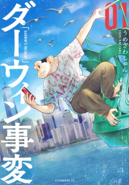

The genetics
The series is built around a genetically engineered human–chimpanzee hybrid, created with genome editing at an unnamed research institute. The scientists who made Charlie stay offstage; the story focuses on what his existence means for others. Its creator describes it as a thought experiment on how society would react if the boundary between humans and animals collapsed, and it uses Charlie to explore bioethics, legal personhood, discrimination and terrorism. The villains are not geneticists but animal-rights extremists, although critics noted that the case for animal rights is treated sympathetically. No human–chimpanzee hybrid has ever been produced, and the manga's author researched the idea of the humanzee extensively before turning it into fiction.
How genetics is portrayed
- Overall portrayal of genetics
- mixed A thought experiment on the human–animal boundary that weighs the consequences of a hybrid's existence without condemning or praising its makers; the villains are extremists, not scientists.
- Outcome of the genetic intervention
- mixed The experiment produces Charlie, a gifted and sympathetic being, but his existence brings fear, prejudice, extremist interest and violence.
- Biological research institute scientists
- neutral Aim: not stated (not applicable). Unseen researchers created the humanzee by genome editing; the sources say nothing about their aims or how they are presented.
The story
This anime series, based on Shun Umezawa's manga, begins when the Animal Liberation Alliance, an extremist animal rights group, raids a biological research institute and rescues a pregnant chimpanzee, who gives birth to Charlie, a human–chimpanzee hybrid or 'humanzee'. Charlie is raised in seclusion by a primatologist and a lawyer, Gilbert and Hannah Stein, and grows up with physical abilities beyond those of humans and chimpanzees and an intelligence greater than a human's. At fifteen he enrols at a high school in Missouri, where he befriends Lucy, a shy honours student. While Charlie seeks a normal life and his own rights, he faces fear and prejudice, an FBI investigation and a congresswoman's interest in his legal status. The ALA's manipulative leader, Rivera Feyerabend, takes an interest in him, drives a student to commit a school shooting and hides Charlie's secret humanzee brother, Omelas.